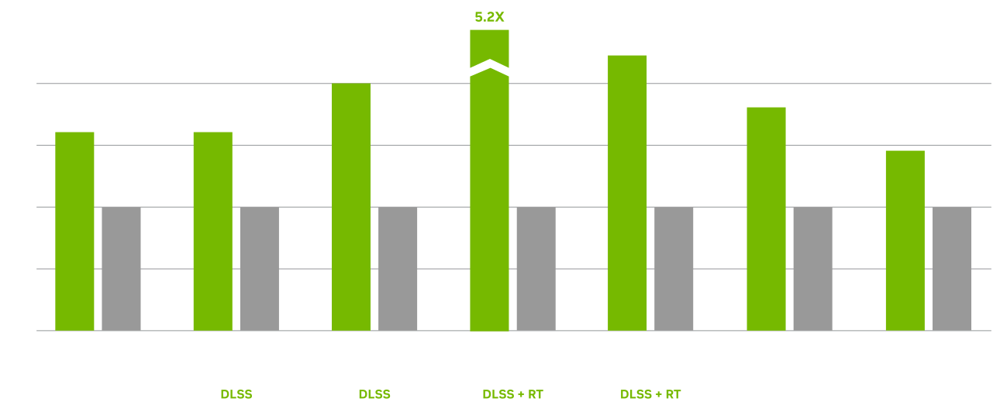

SOBRE
A Placa de Vídeo hoje em dia, é um dos componentes de computadores mais falados, já que todo o seu processamento ajuda em uma execução bem melhor de todas as funcionalidades da máquina. A placa de Vídeo é mais vista por pessoas que requerem um poder de gráficos muito grande que muitas vezes utilizam programas de modelagem 3D, programas de Edição e até mesmo para jogos
A GeForce ficou conhecida pelas suas incríveis placas de Vídeo, e são referância no mundo inteiro. Essa placa RTX 4090 não fica atrás, trazendo seu incrível poder de processamento mais atual do mercado, podendo rodar qualquer software 3D, programas e Jogos. É realmente incrível o que essa placa pode fazer.
DESEMPENHO GRÁFICO
CARACTERÍSTICAS
Game Ready Drivers
Os drivers GeForce Game Ready oferecem a melhor experiência nos seus games favoritos. Os drivers são aprimorados em colaboração com desenvolvedores, e amplamente testados em milhares de configurações de hardware para garantir o melhor desempenho e confiabilidade.
Game Ready Drivers
Capture e compartilhe vídeos, capturas de tela e transmissões ao vivo com seus amigos. Mantenha seus drivers atualizados e otimize as configurações dos seus games. Com o GeForce Experience você pode fazer tudo isso. Ele é o companheiro essencial da sua placa de vídeo GeForce.
Game Ready Drivers
Garanta um gameplay fluido e sem travamentos com altas taxas de atualização, HDR e mais. Este é o monitor de games ideal e o equipamento preferido dos gamers entusiastas.
Game Ready Drivers
Conecte-se, jogue, capture e assista a vídeos em HDR e resoluções de até 8K com a GeForce RTX 4090. Grave vídeos em até 8K HDR com o recurso ShadowPlay™ do GeForce Experience™ e assista a cenas fluidas com a decodificação AV1.
Game Ready Drivers
Os gráficos de mais alto desempenho oferecem as experiências mais fluidas e imersivas em VR.
Game Ready Drivers
O Resizable BAR usa um recurso avançado do PCI Express que permite que a CPU acesse todo o buffer de quadros da GPU de uma só vez, melhorando o desempenho em muitos games
ESPECIFICAÇÕES
| CUDA Core | 16384 |
|---|---|
| Boost Clock (GHz) | 2.52 |
| Tamanho da Memória | 24 GB |
| Tipo de Memória | GDDR6X |
| Máxima Resolução do Monitor | 4K a 240Hz ou 8K a 60Hz com DSC |